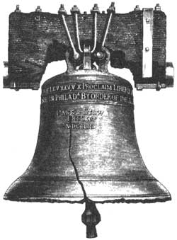
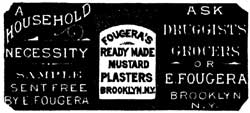
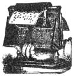

This page contains excerpts from issues of The American Agriculturist dated 1891.
Raising Be" Lettuce In Summer.- James Leech , Allegheny Co., Pa., desires info ton about manure for lettuce. In or experience there to nothing better than ordinary barnyard manure, but, no matter what kind of manure to used, it is difficult to raise good, solid heads in hot and dry weather. A good deal depends on the kind of lettuce planted. The best heads we have ever been able to raise In summer were of the Damon lettuce.
Keeping Jer usalem Artichokes. -W. H. Shaw, St. Francois Co., Me.: Jerusalem artichokes may be wintered in the same manner as potatoes. The *color they we kept without freezing the better they will come out In the spring. If It is a small quantity that Is to be kept, it Is better to put them in a frost-proof caller, in a barrel or box, and cover them with dry soil or sand.
Incubators. -B. S. X., Park City, Utah, desires to know whether a woman can manage an Incubator alone, providing she has already some experience in raising chickens. Incubators can be managed by any Intelligent adult, but of course there will be something to learn at first. All the Incubators advertised In the AMERICAN AGRICULTURIST are reliable, differing only in preference and claims of manufactures.
Vineyardist. -S. Rankin, Cincinnati. O.: You may now use the word 'I vineyardist " for one who works In or takes cam of a vineyard without few that some one may tell Von that it to not recognized by our lexicographers for it has at last found a place In a dictionary. The late edition of Websters ,"International" admits it, and all cultivators of the grape should rejoice over the recognition of a good English word which has been in common use In this country for newly or quite half a century. As horticulturists and agriculturlate we may be thankful for small favors, and hope that our lexicographers will not forget us In future editions of their great lexicons.
Chickens Dying.- Miss M. D. X., Hampshire Co., X. The fact that only those given liberty were affected Indicates a probability of the hens being poisoned in some manner, especially if you or your neighbors have carelessly allowed Paris green to be placed where they mold reach It. Or, If not, they way be crop bound from eating dried grass, Induced by their liberty and lack of green food.
Feeding Turnips .-Dairyman, Northampton Co., Pa.: You cannot feed turnips to milch come without affecting the Asivor of the butter and giving it a turnipy taste. It will make little or no differ once whether the turnips we fed before or after milking, with or without salt the scent of the turnips will pass Into the milk veins and milk. Furthermore. If turnips, cabbages, and similar strong scented vegetables are cut up and fed to other animals In the same ham or stable where milch cows we standing, the very air breathed by the milch cows will be laden with the strong odor, and this will taint the milk. Pare and fresh air in just as Important as pure and nearly inodorous food for cows In order that they should give the best quality of milk for butter making. There are no doubt, sows which are not so susceptible to the effect of poor and strongly wanted food as others but they and not, as a rule, animals that give the richest milk.
What Horses Sell Best? -J. Y. Gedney, Mitchell CO., Iowa, desires to know what kind of horses sell best. This doubtless refers to horses for all purposes. There are many good horses brought from Iowa to New York State. Speed will not be noticed. Horses having the following form will always sell: A good sized bony head, full, kind eye' pricked ears, good crest, oblique shoulders, short on back, long oil belly, somewhat arched at coupling well ribbed up, heavy boned, short, flat legs, compact, blocky, active, good tempered, and a good walker. Also he should have size and weight, say from 1,000 pounds upward.
Grubs Eating Strawberries.- Edward R. Hastings, Middlesex Co., Mass., writes us: There is one good point in favor of nitrate soda that I have not seen noticed. I have used it in small quantities for a number of years. In applying large quantities of manure to strawberries I was troubled by muck worms (the larvae of the May beetle) eating the plants. A heavy application of nitrate of soda seemed to keep them away from a bed to which I applied it. We applied a heavy dressing of nitrate of soda last year to early cab bages. It made the cabbages grow rapidly but it had no apparent effect on the grubs which attacked the roots or stems of some of the plants. But we think it sometimes cheeks the ravages of the onion maggots. Probably because It makes the plants grow so rapidly.
Fowls Eating Salt. - R. L. Spencer, Monmouth Co., N. J.: The symptoms of fowls having eaten salt would be excessive thirst, convulsions, mouth open constantly, resulting in death in a few hours, according to the quantity of "It eaten.
Is the Strongest and Best Self. Regulating Wind Mill made. Full instructions for erecting sent with the first mill. All Wind Mills warranted. For Circulars and Prices address. The Perkins' Wind Mill & Ax Co. Agents wanted.
Beat Use of Muck. -Willard Agans Herkimer Co., N. Y., ham a muck swamp which is well drained, and desires information In regard to making it the most available as a fertilizer. The most profitable use to which muck can be lint Is to use it as an absorbent In the stable or barnyard. Mild winter days afford all excellent opportunity for digging and carting muck to places where it can be easily handled for these purposes.
Enormous Vegetables From Washington -Isaac Cathcart, Snohomish Co., Wash., has raised an Early Rose potato weighing five pounds four ounces. Robert T. Flynn, Kitsap Co., Wash:, 'as raised a turnip weighing twenty pounds and measuring thirty-six Inches in circumference. The above specimens have been forwarded to New York for exhibition.
Selection of Breeds of Fowls. -M. T. Waters. Hamilton Co., 0., proposes to start in the business of raising poultry with a few pure Leghorns for the production of eggs, and Light Brahmas or Plymouth Rocks for rearing chickens. This selection of breeds and proposed method should lead to success, it good management and care are given.
French Method of Fattening Fowls. -Subscriber: The method of the French is to fatten fowls by confining them in coops or stalls, an attendant inserting a tube In the throat and the crop is filled by forcing food down the throat. In other words, the food is "pumped" down the fowl. The food Is mostly carbonaceous, ground grain and milk predominating.
"Phosphates" for Garden Crops -S. K. Green, Monroe Co., X. X., writes: "I run a garden farm and have four acres of asparagus, three acres early cabbage, four acres unions, strawberries, etc., and us all the manure I can get. I have tried phosphate, but don't see much good from It." Our own experience confirms this statement so far as the crops named are concerned. With the exception of lettuce and turnips, we think the average "phosphates" we not rich enough In nitrogen to show any marked effect on garden crops. In buying fertilizers, the gardener and fruit - grower should either buy the phosphate, potash and nitrogen separately and do his own mixing, or he should buy a brand of fertilizer that contains a liberal percentage of nitrogen-say five or six per cent of soluble or readily available nitrogen.
This Instrument Containing 22 NOTES (6 MORE than is contained in any other like instrument) is unequalled for durability, power, and sweetness of tone. Larger sizes for House, Lodge and Chapel contain 32 notes.
For Grown People and children, the finest and cheapest AUTOMATIC MUSICAL INSTRUMENT ever offered. Sand for Circular and Catalogue of Music.
TIME AUTOPHONE Co.
Canvassers Wanted.
|
|
 |
|
|
 |
 |
|